Spatial Queues with Nearest Neighbour Shifts
B. R. Vinay Kumar & Lasse Leskelä
INRIA NIM
April 15, 2025
Sophia Antipolis, France
Motivation
Airports
Supermarkets
Restless jumper
EV charging
J. Kang, C. Kan, and Z. Lin,
“Are Electric Vehicles Reshaping the City? An Investigation of the Clustering of Electric Vehicle Owners’ Dwellings and Their Interaction with Urban Spaces,”
ISPRS International Journal of Geo-Information, vol. 10, no. 5, May 2021.
Related work
E. Altman, H. Levy, Queueing in space, Adv. in Appl. Probab. 26 (4) (1994) 1095–1116.
N.K. Panigrahy, T. Vasantam, P. Basu, D. Towsley, A. Swami, K.K. Leung, On the analysis and evaluation of proximity-based load-balancing policies, ACM Trans. Model. Perform. Evaluat. Comput. Syst. 7 (2–4) (2022) 1–27.
System Model
- $N$ service stations distributed uniformly $\{X_i\}_{i=1}^N \subset [0,1]^d$
- Each service station:
- Service rate: $\mu$
- Arrival process: $\lambda$
- Infinite capacity
-
\((k, p)\)-Nearest Neighbour Shift (NNS)
- Customer arrives at server $i$
- With probability $1 - p$, stays at $i$
- With probability $p$, chooses uniformly among $k$ nearest neighbours $\mathcal{N}_k(i)$
 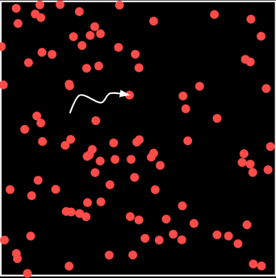
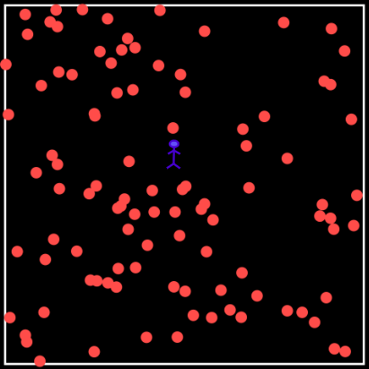
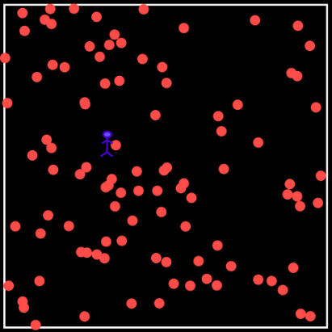
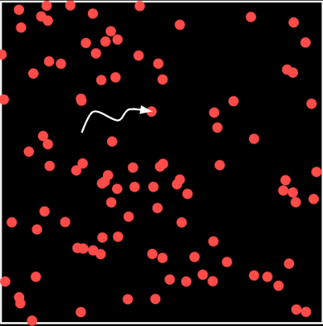
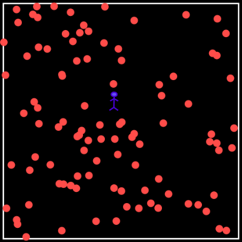
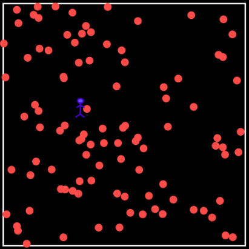
Problem statement
-
Define the effective arrival rate at server $i$:
\(\lambda_{\text{eff}}(i) = \) \(\lambda(1 - p)\) \(+\) \(\sum_{j: i \in \mathcal{N}_k(j)} \frac{p}{k} \lambda\)
- The effective load at server $i$ is $$\rho_i = \frac{\lambda_{\text{eff}}(i)}{\mu}$$
- A server is overloaded if $\rho_i > 1$
-
The main object of interest:
\(\mathcal{O}_N\) \(= \frac{1}{N} \left| \{ i : \rho_i > 1 \} \right|\)
Fraction of overloaded servers
Main Result: General Dimension
- If $\frac{\lambda}{\mu} \leq \frac{1}{1 - p + \alpha_d p}$, then $\mathcal{O}_N = 0$ a.s. for all $N$.
- If $\frac{\lambda}{\mu} > \frac{1}{1 - p + \alpha_d p}$, then there exist constants \(q_{d,k,n}\) and \(\sigma_{d,k}\) such that
- Law of large numbers:
\(\ \ \ \ \ \mathcal{O}_N\) \(\xrightarrow{\text{a.s.}} \sum_{n = \lfloor \theta \rfloor + 1}^{\alpha_d k} q_{d,k,n}\)
where $\theta = k + \frac{k}{p} \left( \frac{\mu}{\lambda} - 1 \right)$
- Central limit theorem:
\( \ \ \ \ \ \sqrt{N} (\mathcal{O}_N - \mathbb{E}[\mathcal{O}_N])\) \(\xrightarrow{d} \mathcal{N}(0, \sigma_{d,k}^2)\)
- Law of large numbers:
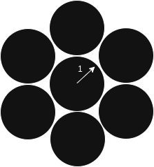
\(\alpha_d \le \text{ kissing number}\)
Main Result: \(d=1\) and \(k=1\)
- If $\frac{\lambda}{\mu} \leq \frac{1}{1 + p}$, then $\mathcal{O}_N = 0$ a.s. for all $N$.
- If $\frac{\lambda}{\mu} > \frac{1}{1 + p}$, then
- Law of large numbers:
\(\ \ \ \ \ \mathcal{O}_N\) \(\xrightarrow{\text{a.s.}} \frac{1}{4}\)
- Central limit theorem:
\( \ \ \ \ \ \sqrt{N} (\mathcal{O}_N - \mathbb{E}[\mathcal{O}_N])\) \(\xrightarrow{d} \mathcal{N}(0, \frac{19}{240})\) - Expected number: For every $N\ge 4$,
\( \ \ \ \ \ \mathbb{E} \big[\mathcal{O}_N\big]\) \( = \frac{1}{4}\)
- Law of large numbers:
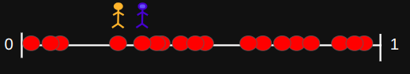
One dimension
- Counterintuitive: Nearest neighbour relation is not symmetric.
- Suffices to look at the \(p=1\) case.
- Distribution of consecutive ordered statistics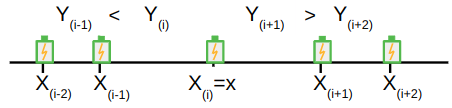Load = 0
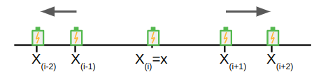
Load = 2
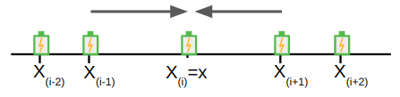Load = 1
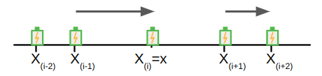
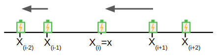One dimension
Load = 0
Load = 2
Load = 1
- All confgurations are equally likely
- \( \mathbb{E} \big[\mathcal{O}_N\big]\) \(= \mathbb{E}\big[\sum_{i=1}^N \mathbf{1}\big\{\text{server }i \text{ has load }2 \big\}\big] = \frac{1}{4}\)
- Can also show # of servers with load 0 = # servers with load 2
Drawbacks: Hard to generalize to \(k>1\) or \(d>1\).
\(k\)-NN graph
- Directed graph on \(N\) vertices, \(G_{d,k}^N\)
- An edge from \(i\rightarrow j\) if \(j\) is one of the \(k\) nearest neighoburs of \(i\).
-
Properties: For all \(i \in [N]\),
- \(d_{\text{out}}(i) = k\)
- \(d_{\text{in}}(i) \le \alpha_d k\)
- Define \(Q_{d,k,j}^N\) \(\:=\) Number of nodes with in-degree \(j\) in \(G_{d,k}^N\)
-
LLN and CLT
\(\frac{Q_{d,k,j}^N}{N} \xrightarrow{a.s.} q_{d,k,j} \) and \(\frac{Q_{d,k,j}^N-\mathbb{E}Q_{d,k,j}^N}{\sqrt{N}} \xrightarrow{d} \mathcal{N}(0,\sigma_{d,k,j}^2)\)
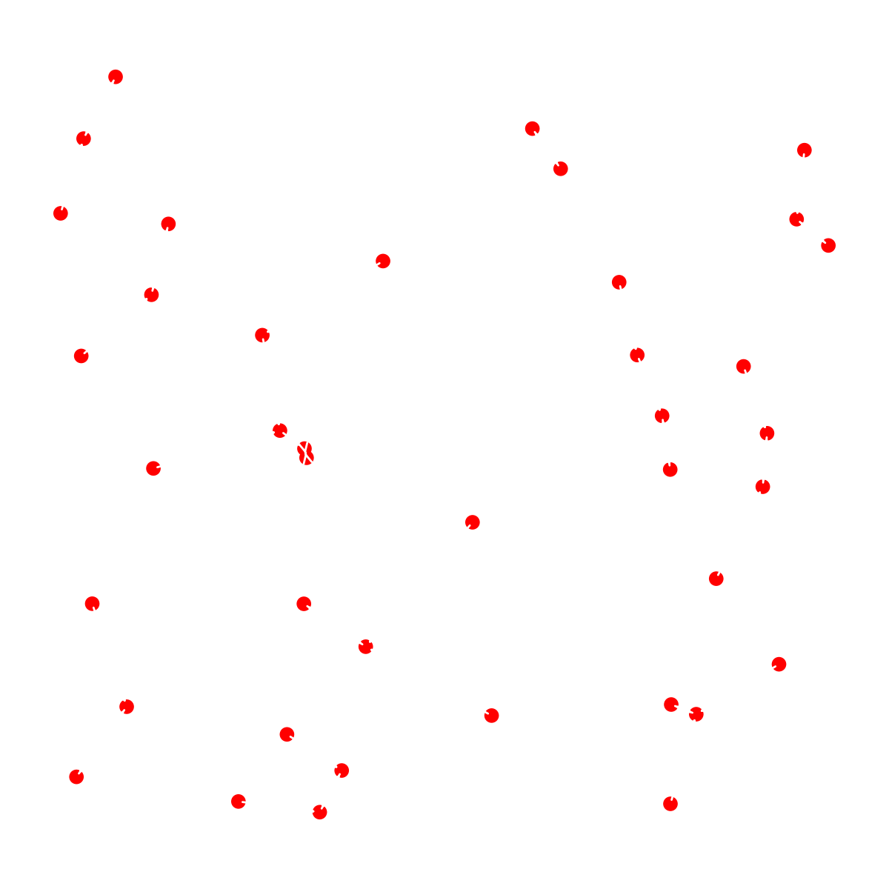Overloaded servers and the \(k\)-NN graph
- \(k\)-NN graph - \(G_{d,k}^N\)
- Define \(Q_{d,k,j}^N\) \(\:=\) Number of nodes with in-degree \(j\) in \(G_{d,k}^N\)
-
LLN and CLT
\(\frac{Q_{d,k,j}^N}{N} \xrightarrow{a.s.} q_{d,k,j} \) and \(\frac{Q_{d,k,j}^N-\mathbb{E}Q_{d,k,j}^N}{\sqrt{N}} \xrightarrow{d} \mathcal{N}(0,\sigma_{d,k,j}^2)\) -
A server \(i\) is overloaded if
\(\rho_i > 1\)\(\lambda_{\text{eff}}(i) > \mu\)\( \lambda(1 - p)+ \sum_{j: i \in \mathcal{N}_k(j)} \frac{p}{k} \lambda > \mu \)\( \lambda(1 - p)+ d_{\text{in}}(i) \frac{p}{k} \lambda > \mu \)\( d_{\text{in}}(i) >k+\frac{k}{p}\Big(\frac{\mu }{\lambda}-1\Big) =: \theta \)
-
Fraction of overloaded servers
\(\hspace{3cm}\mathcal{O}_N\) \(=\begin{cases}\frac{1}{N} \sum_{j=\theta+1}^{\alpha_d k }Q_{d,k,j}^N & \theta < \alpha_d k \\ 0 & \theta \ge \alpha_d k\end{cases}\)
Numerical Simulations
- Simulation over $N = 1000$ servers, $\lambda = 1$, $\mu = 1.25$
- Shifting probability $p \in \{0.25, 0.5, 0.75, 1.0\}$
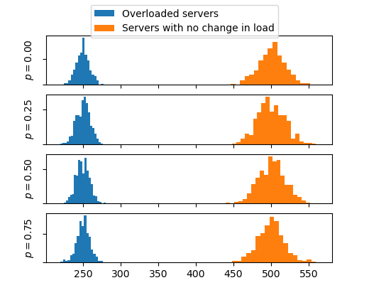
\(d=1\)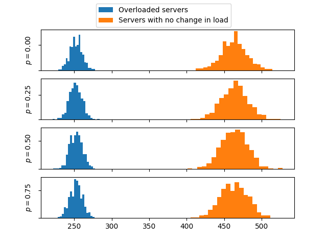
\(d=2\)Load balancing on spatial queues
- \(N\) servers around a circle
- \(N\) arrivals uniformly on the circle
- Arrivals joins the shortest among \(k\) nearest queues
Theorem
- If \(k=O(1)\), then there exists a server with load \(\frac{\log N}{\log \log N}\) with high probability.
- If \(k>\frac{2\log \log N}{3}\), then the number of servers with load \(>\frac{\log N}{\log \log N}\) converges to \(0\).
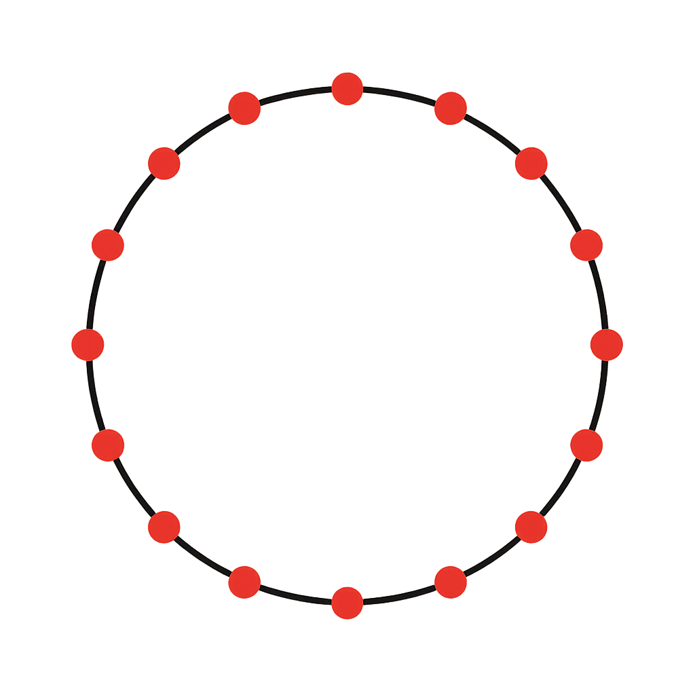 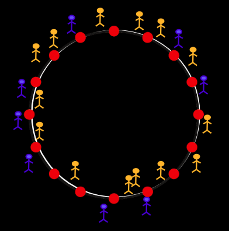Future Work
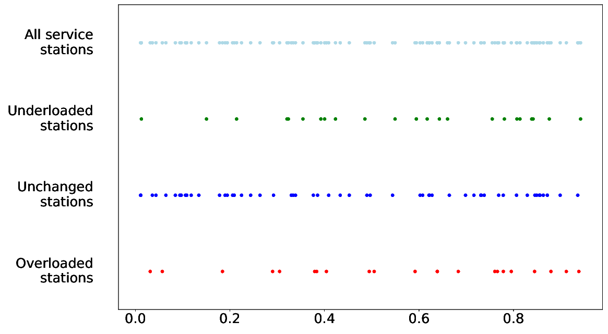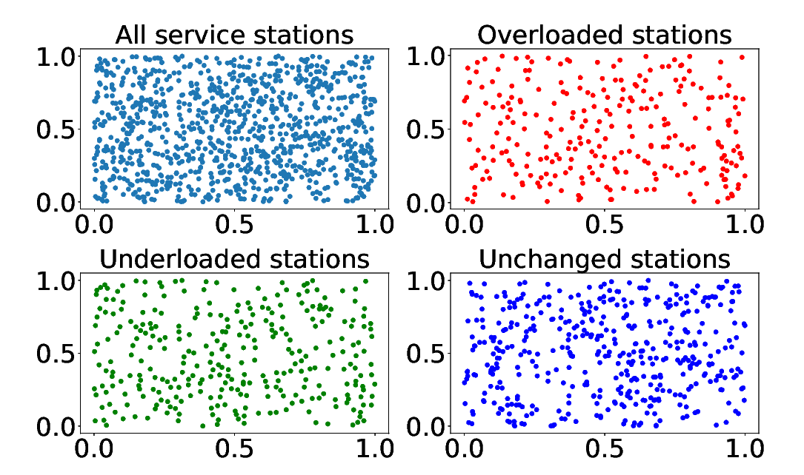Thanks!
Email: v.k.bindiganvile.ramadas@tue.nl
Paper: https://arxiv.org/abs/2402.13192
Website: vinkumbr.github.io